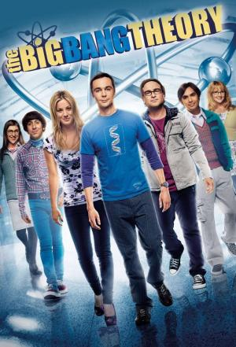

The Big Bang Theory |
||
|---|---|---|
|  | Sinopsis: Leonard (Johnny Galecki) y Sheldon (Jim Parsons) son dos cerebros privilegiados que comparten piso. Aunque los dos, doctores en Física, son capaces de calcular las probabilidades de existencia de otros mundos, no saben cómo relacionarse con los demás, especialmente con las chicas. Penny (Kaley Cuoco), una vecina recién llegada, es el polo opuesto a los dos amigos, de modo que su llegada altera la tranquila vida sentimental de Leonard y el desorden obsesivo-compulsivo de Sheldon. |
Director:Chuck Lorre, Bill Prady Reparto:Johnny Galecki, Jim Parsons, Kaley Cuoco Año: 2007 Duracion:20 min cada episodio Pais:Estados Unidos |
Criticas Profesionales:Robert BiancoQuizás no sea la sitcom descubrimiento que todos hemos estado esperando, pero Lorre ha producido un primer episodio que te deja con ganas de ver el segundo. |
Trailer |
Obtener:AlquilarComprar |
Registrate/Iniciar Sesion